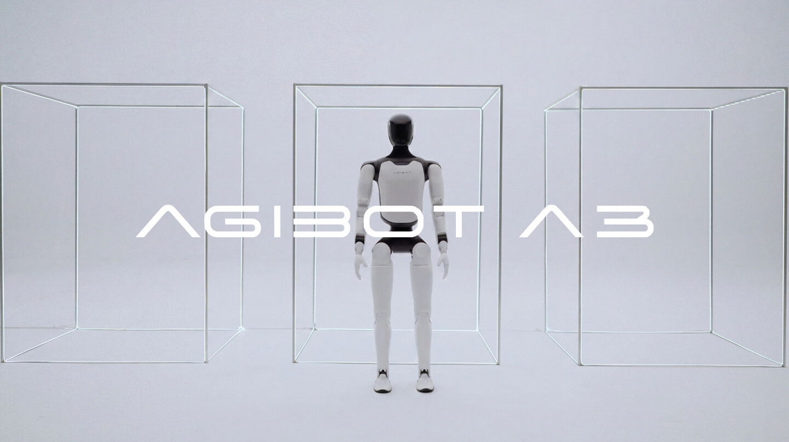
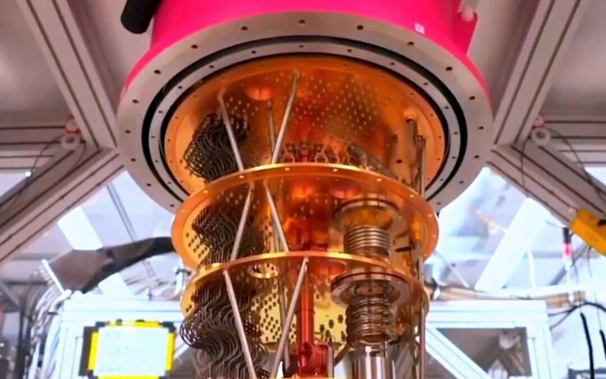
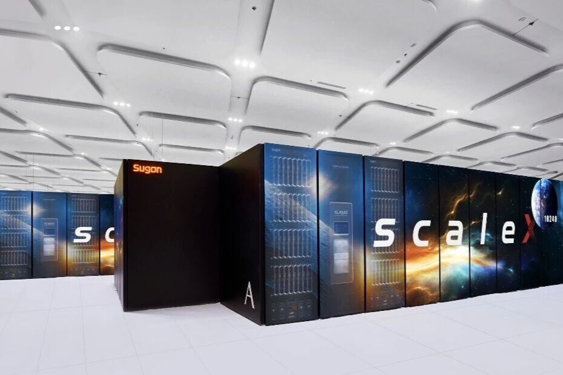
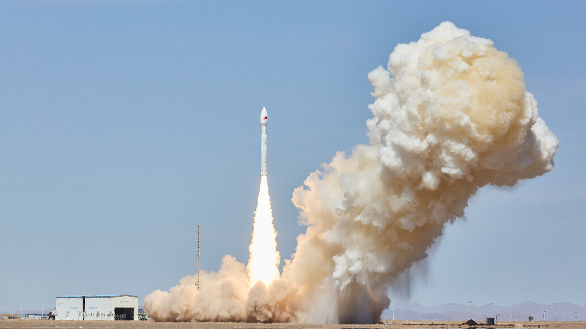
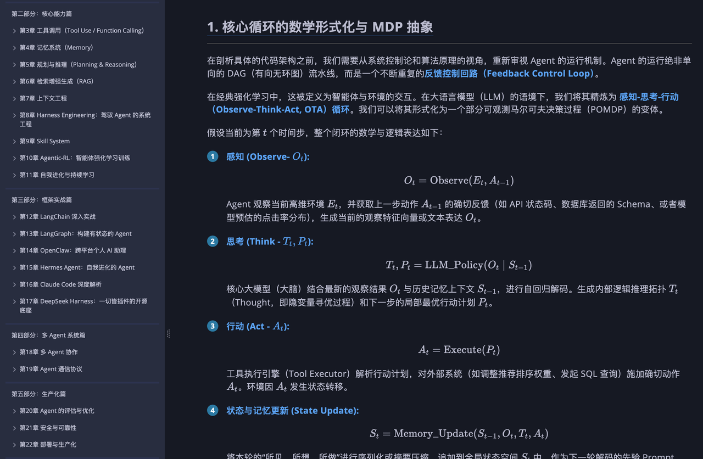
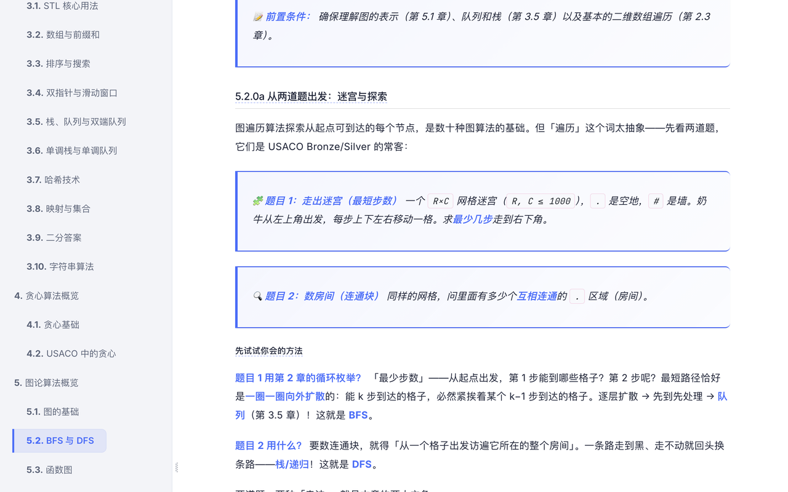
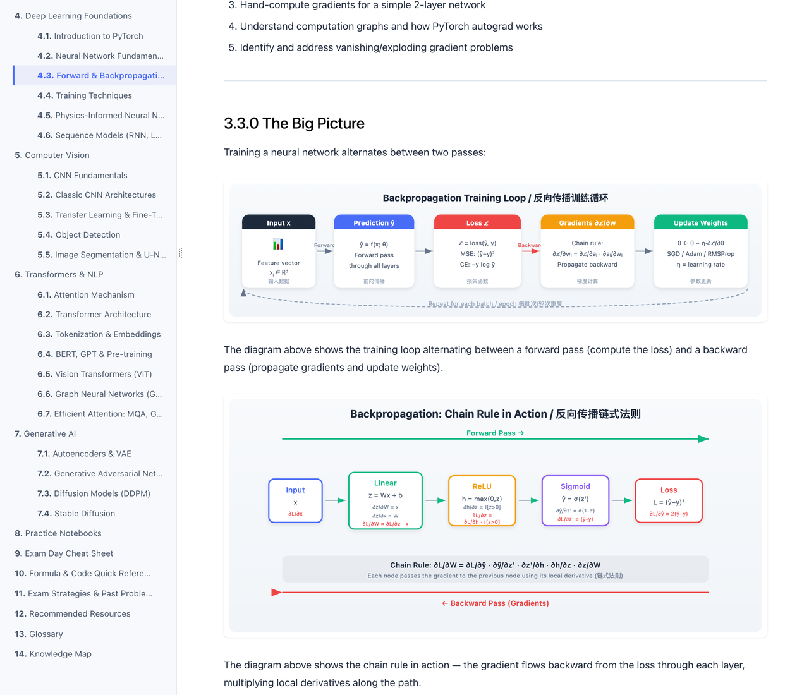
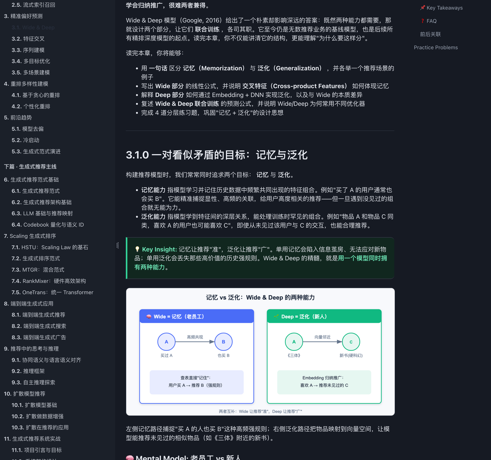
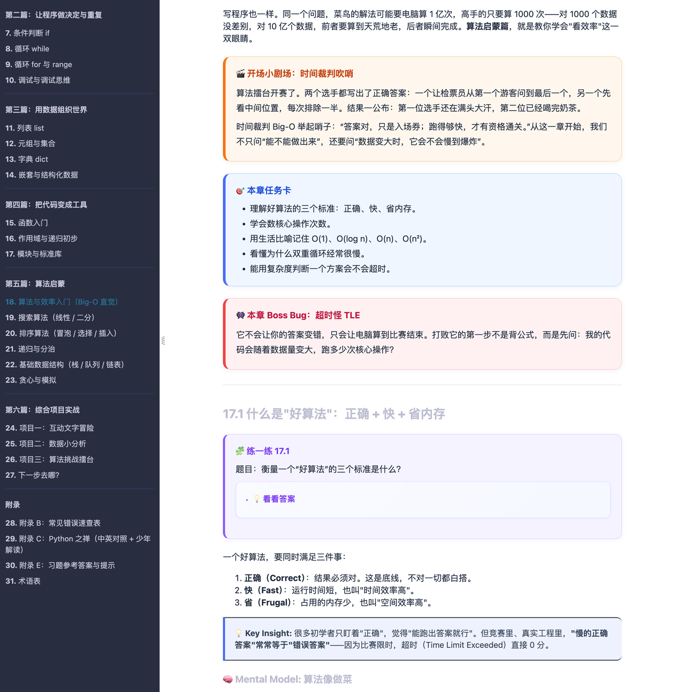

关于我WHO AM I
我是邢浩哲，一名专注于大模型应用与知识工程的工程师。我的研究与工程轨迹横跨计算机视觉（伪装目标检测，SCI 一区一作）与大模型应用（Agent 系统、RAG、DPO 微调），习惯于「把论文变成系统」—— 无论是全链路的 AI 新闻生产 Agent，还是一个自动生成算法讲解视频的 Skill。
长期维护开源项目《从零开始学 Agent》（GitHub 512 Star，23 章 / 188 页 / 330+ 原创 SVG），并撰写了五本技术著作 —— 从 USACO 竞赛 C++ 到推荐系统双语知识库，把「写书」本身当作知识工程来做。也喜欢做完整闭环的独立产品：从产品设计、后端架构到前端可视化全部自己完成。
精选项目SELECTED WORK
AI 新闻生产 Agent
主导构建「话题筛选 → 资讯过滤聚合 → 新闻生成 → 内容审核 → 智能配图（搜图+生图）→ 多模态分发」全链路 AI 新闻生产系统。构建资讯分级体系保障优质信源占比 ≥90%；通过 RAG 与一致性校验将幻觉率从 21–34% 压到 10% 以内；针对时间/人物幻觉与过度总结，用 LLM-as-a-Judge、DPO 微调、GEPA 把正文评分从 −0.3 提升到 0.66。在此之上接入 AutoResearch 自进化闭环：Agent 自动完成评测、失败归因与自我改写，把每轮结论沉淀为可复用规则，评分不靠人工调参而持续爬升。正探索基于 Remotion 的资讯转视频能力。




LLM Wiki Knowledge Vault
Agent 驱动的知识库管理系统。以 mdBook 为底层存储与渲染引擎，把知识库抽象为「可检索、可阅读、可维护」的结构化书籍。设计暂存区/持久区双层内容治理机制，以全局 YAML 索引作为唯一真相来源；构建融合标签重叠、语义相关与类型亲和的自动分类管线，低置信度内容回退人工确认。已沉淀 6 个知识库、数百篇技术内容。





Algorithm Explain Skill
算法题讲解视频的自动化生产系统：从题目解析、分镜脚本、动画组件到成片交付全流程自动化。一键生成 Remotion 工程骨架、题解 Markdown、分镜配置与 React 动画片段；结合 TTS 与 FFmpeg 实现语音合成、音画同步、字幕与渲染合成。内置 QA 机制，自动检测关键帧内容占比、画面留白与字幕长度并生成报告。
Coding AI Learning Coach
面向竞赛编程的智能学习平台，覆盖能力诊断、学习路线生成、题库推荐、在线刷题判题与错题复盘全流程。后端 FastAPI + SQLModel，前端 Vue 3 + TypeScript + ECharts，接入 LLM 完成错因分析与推荐排序，沉淀 54 个知识点、81 条前置关系，形成「诊断 → 规划 → 练习 → 反馈 → 复盘」的完整闭环。
LazyDraw · AI 绘图 APP
面向艺术家的 AI 绘图应用（独立产品方向，2023.03 — 2023.06）。独立完成产品设计与基于 FastAPI 的后端服务， 把 Stable Diffusion、ControlNet 与 SAM 组合成可控生成链路，并针对文生图中手部绘制效果差的问题做了工程化优化。
伪装目标检测 · TCSVT
提出 Search–Amplify–Recognize 三阶段检测网络与图底关系转换模块，在伪装目标检测及下游任务上大幅超越 SOTA，且可即插即用提升其他方法性能。
仲景中医大语言模型
知识增强的中西医大模型。Human-in-the-Loop 多轮交互合成高质量专业语料，融合中西医学与认知科学思路，基于 LLaMA2-7B 微调。
stemCoding · 儿童 AI 编程教育
在 Scratch 基础上二次开发扩展代码库，儿童可通过 Scratch 交互式控制 Unity 中的足球机器人对战，极大增强编程教学的互动性。
移动端轻量化检测模型
针对移动端部署成本问题，调研业内领先模型并进行轻量化设计，运用 NNI 完成模型压缩与优化，覆盖显著性/伪装目标检测与舌苔检测。
多模态高精数据标注工具
引入灵活的 Mask 画笔与橡皮擦，显著提升细节丰富图像的预标注精度（如精确标注猫的胡须），告别逐点调整。
招聘网站
岗位发布与简历投递的完整招聘平台，覆盖职位检索、投递流程与后台管理。
购物网站
电商站主链路实现：商品浏览、购物车、订单生成与结算流程。
疫情监测平台
多源数据接入的疫情监测看板，支持按地区与时间维度的趋势查询与可视化。
简易 Excel 软件
桌面端表格工具，实现单元格编辑、公式解析与文件读写，还原表格软件的核心交互。
页面置换算法微课软件
操作系统教学演示工具，逐帧模拟 FIFO / LRU / OPT 等置换算法的缺页过程。
源码与更多细节
上述早期项目的完整源码、设计说明与运行方式均开源在 GitHub。详见 仓库 ↗
技术著作WRITING · 5 BOOKS
把知识写成可检索的书
四本 mdBook 技术著作，覆盖竞赛编程、AI 奥赛、推荐系统与Python 入门。 每一本都是「结构化知识工程」：章节依赖图、术语表、SVG 图示、分层习题，以及面向 Agent 检索的机器可读索引。
从零开始学 Agent
系统、全面、实战导向的 Agent 开发教程。从 LLM 基础到 ReAct、MemGPT、RAG、多智能体、Agentic RL —— 先讲机制再讲框架，每章配有原创 SVG 架构图与可运行的 reference-agent（含工具、记忆、安全门、评估、FastAPI 与 16 个测试）。
在线阅读 ↗C++ for Competitive Programming
面向 USACO 竞赛的完整 C++ 教程：从第一个程序到 Gold 级问题，一条线性路径贯穿语法、数据结构与图论。每章配有带注释的可编译 C++17 代码、Easy/Medium/Hard 分层习题与 20+ 赛场模板，全部抽象算法都配 SVG 可视化。
USAAIO Mastery: From Zero to AI Olympiad
覆盖 USAAIO 官方大纲全部主题的教材：数学基础 → 机器学习 → 深度学习 → 计算机视觉 → Transformers → 生成式 AI。「视觉优先」的写法，每个概念配 SVG 图解；附 7 套 Colab 刷题集与 2 套全真模拟考（3 题 / 300 分 / 180 分钟）。
RecSys & Computational Advertising KB
为「自动研究」构建的双语知识库：判别式推荐（召回/排序/重排）、生成式推荐（语义 ID、HSTU、OneRec、扩散模型）与计算广告（拍卖机制、智能出价、反作弊）三条主线。每章是可精确引用的自包含单元；内置 llms.txt 与机器可读章节索引，供 Agent 高效检索。
Python 入门：像计算机科学家一样思考
为零基础中学生打造的 Python 第一本书，双引擎驱动：计算思维 + 算法启蒙。从变量、控制流到 Big-O、搜索排序、递归分治，最后落地到文字冒险、数据分析与算法擂台三个实战项目，为 USACO 与 AI/ML 路线打底。
论文发表PUBLICATIONS
《从零开始学 Agent》开源教程
面向中文社区的 Agent 系统化学习路径，GitHub 接近 500 Star。 在线阅读 ↗